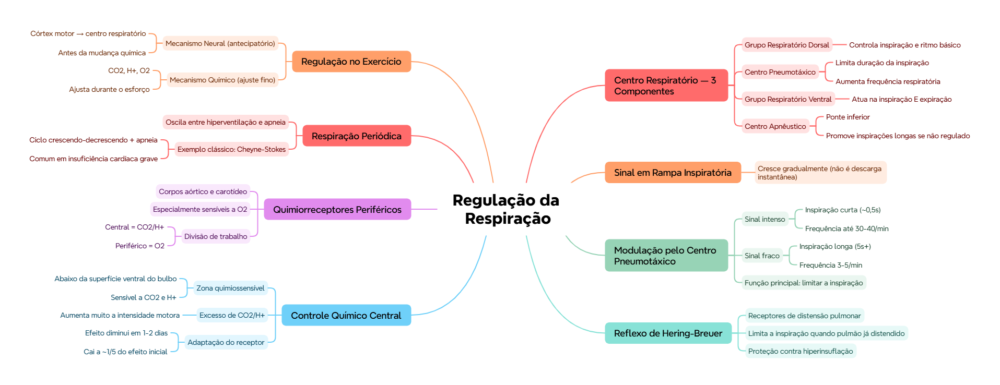

🎯 O que você vai conseguir fazer depois desse capítulo
Descrever os 3 componentes do centro respiratório e a função de cada um
Explicar o sinal em "rampa" inspiratória e como o centro pneumotáxico o modula
Explicar o reflexo de insuflação de Hering-Breuer
Descrever o controle químico da respiração (CO₂, H⁺, O₂) e onde cada sensor está localizado
Reconhecer a respiração periódica e seu exemplo clássico
Explicar como a respiração se ajusta durante o exercício
🧠 O centro respiratório — 3 componentes
Componente
Função
Grupo respiratório dorsal
Controla a inspiração e o ritmo respiratório básico — é o "marca-passo" principal
Centro pneumotáxico
Limita a duração da inspiração e aumenta a frequência respiratória
Grupo respiratório ventral
Atua tanto na inspiração quanto na expiração (diferente do dorsal, que só cuida da inspiração)
📌 O que o professor cobra nesta seção (do roteiro dele): "ação do centro pneumotáxico, grupo dorsal e ventral, apnêustico" — os 4 componentes do sistema de controle central, com suas funções específicas.
🏥 Centro apnêustico: localizado na ponte inferior, tende a promover inspirações longas e profundas (apneusis) se não for regulado. Em condições normais, o centro pneumotáxico o mantém sob controle — é por isso que lesões que removem a influência pneumotáxica podem causar um padrão respiratório anormal chamado respiração apnêustica (inspirações prolongadas com pausas breves).
📈 Sinal em "rampa" inspiratória
O sinal nervoso transmitido aos músculos respiratórios (principalmente o diafragma) NÃO é uma descarga instantânea de potenciais de ação — é um sinal que cresce gradualmente, em "rampa", ao longo da inspiração. Isso gera uma inspiração suave e progressiva, ao invés de um movimento brusco.
🎛️ Como o centro pneumotáxico controla a rampa
Sinal pneumotáxico
Duração da inspiração
Frequência respiratória
Intenso
Só ~0,5s — pulmões enchem pouco
Aumenta até 30-40/min
Fraco
5s ou mais — pulmões enchem bastante
Reduz a 3-5/min
🟢 Função principal do centro pneumotáxico: limitar a inspiração. Ele não gera o ritmo respiratório (isso é o grupo dorsal) — ele MODULA quanto tempo a inspiração dura, ajustando profundidade e frequência.
🫁 Reflexo de insuflação de Hering-Breuer
Sinais de insuflação pulmonar (vindos de receptores de distensão nos pulmões) também limitam a inspiração — é um mecanismo de proteção que impede que o pulmão seja hiperinsuflado além do necessário. Quando o pulmão já está bastante distendido, esses receptores enviam sinal pro centro respiratório, ajudando a "desligar" a rampa inspiratória.
🧪 Controle químico da respiração
Existe uma zona quimiossensível do centro respiratório, localizada logo abaixo da superfície ventral do bulbo raquídeo — sensível a CO₂ e íons hidrogênio no líquido cefalorraquidiano/sangue.
Efeito do excesso de CO₂/H⁺: atua diretamente sobre o próprio centro respiratório, causando um grande aumento na intensidade das sinais motoras — tanto inspiratórias quanto expiratórias.
💭 Adaptação do receptor: a excitação do centro respiratório pelo CO₂ é intensa nas primeiras horas após uma elevação do CO₂ sanguíneo, mas diminui gradualmente ao longo de 1-2 dias, caindo pra apenas ~1/5 do efeito inicial. Isso explica por que pacientes com retenção crônica de CO₂ (ex: DPOC avançada) ficam menos sensíveis a esse estímulo com o tempo, dependendo cada vez mais do estímulo hipóxico (via quimiorreceptores periféricos) pra manter a ventilação.
📡 Quimiorreceptores periféricos
Localizados nos corpos aórtico e carotídeo — são o sistema periférico de controle respiratório, especialmente importante pra detectar queda de oxigênio (o controle central via bulbo é mais sensível a CO₂/H⁺, não a O₂ diretamente).
💡 Essa divisão de trabalho é elegante: o centro central (bulbar) monitora principalmente CO₂/pH; os quimiorreceptores periféricos (aórtico/carotídeo) ficam de olho principalmente no O₂ — juntos, cobrem as duas principais variáveis que precisam ser controladas.
🌀 Respiração periódica
É um padrão respiratório anormal em que a respiração oscila entre períodos de hiperventilação e apneia (parada respiratória), ao invés de manter um ritmo constante.
🏥 O exemplo clássico é a respiração de Cheyne-Stokes: a ventilação aumenta e diminui gradualmente, num ciclo repetitivo (crescendo-decrescendo), intercalado com períodos de apneia — comum em insuficiência cardíaca grave e em lesões cerebrais que afetam o controle respiratório central.
🏃 Regulação da respiração durante o exercício
Durante o exercício, a ventilação aumenta de forma coordenada por 2 tipos de mecanismo:
Neural (antecipatório): sinais do córtex motor, ao mesmo tempo que ativam os músculos do movimento, também enviam sinais colaterais pro centro respiratório — a ventilação já começa a subir ANTES mesmo de haver mudança química detectável no sangue
Químico (de ajuste fino): à medida que o exercício continua, CO₂, H⁺ e (em menor grau) O₂ ajustam a ventilação pra manter as trocas gasosas adequadas ao novo nível de demanda metabólica
✅ O que você deve lembrar
Grupo dorsal = ritmo/inspiração. Centro pneumotáxico = limita inspiração, ajusta frequência. Grupo ventral = inspiração E expiração. Zona quimiossensível bulbar = CO2/H+. Quimiorreceptores periféricos = O2.
⚠️ Erro comum
Achar que o centro bulbar central é o principal sensor de O2 — na verdade ele é mais sensível a CO2/H+; a detecção de O2 é função principal dos quimiorreceptores PERIFÉRICOS (corpos aórtico e carotídeo).
⚡ Questão rápida
Por que um sinal pneumotáxico intenso reduz a duração da inspiração?
Porque a função principal do centro pneumotáxico é limitar a inspiração — quanto mais intenso o sinal, mais cedo ele "corta" a rampa inspiratória, resultando em inspirações mais curtas (e, consequentemente, mais frequentes).
🧠 Autoexplicação
Por que faz sentido que o ajuste neural (antecipatório) da ventilação durante o exercício aconteça ANTES da mudança química no sangue, ao invés de esperar o CO2/H+ subirem primeiro?
Se o corpo esperasse o CO2 e o H+ realmente subirem no sangue pra só então aumentar a ventilação, sempre haveria um atraso entre o início do exercício e a resposta ventilatória adequada — durante esse atraso, os músculos já estariam trabalhando com mais demanda metabólica sem o suporte respiratório correspondente, gerando um déficit temporário de oxigenação logo no início de cada esforço. Ao antecipar a resposta através de sinais neurais diretos do córtex motor (que já sabe que um movimento está sendo iniciado, antes mesmo dos produtos metabólicos se acumularem), o sistema respiratório consegue começar a se ajustar praticamente ao mesmo tempo que o esforço muscular começa, minimizando esse atraso. O ajuste químico posterior serve então como um mecanismo de precisão fina, corrigindo qualquer desequilíbrio residual que a resposta antecipatória não tenha compensado exatamente.
⚠️ Onde todo mundo escorrega
Confundir a função do grupo dorsal (só inspiração/ritmo) com o grupo ventral (inspiração E expiração)
Achar que o centro pneumotáxico GERA o ritmo respiratório — ele só MODULA/limita, o ritmo vem do grupo dorsal
Esquecer que o efeito estimulador do CO2 diminui com o tempo (adaptação, cai a 1/5 em 1-2 dias) — não é um estímulo constante e imutável
Trocar quimiorreceptores centrais (bulbares, sensíveis a CO2/H+) com periféricos (corpos aórtico/carotídeo, sensíveis principalmente a O2)
Achar que a resposta ventilatória ao exercício é só química — o componente neural antecipatório é igualmente importante, e age primeiro
📚 Se você só puder lembrar de 6 coisas
Grupo dorsal = ritmo/inspiração. Centro pneumotáxico = limita inspiração. Grupo ventral = inspiração E expiração
Sinal inspiratório é em "rampa", não descarga instantânea
Sinal pneumotáxico intenso = inspiração curta (~0,5s) + frequência alta (30-40/min). Fraco = inspiração longa (5s+) + frequência baixa (3-5/min)
Hering-Breuer: distensão pulmonar excessiva também limita a inspiração (proteção contra hiperinsuflação)
Zona quimiossensível bulbar = CO2/H+ (efeito diminui com o tempo, adaptação). Quimiorreceptores periféricos (aórtico/carotídeo) = O2
Exercício: resposta neural antecipatória (antes da mudança química) + ajuste químico fino depois
🩺 Caso Clínico Progressivo — Insuficiência Cardíaca e Respiração de Cheyne-Stokes
Vamos acompanhar o Sr. Deraldo, 68 anos, com insuficiência cardíaca avançada. O caso evolui em 3 níveis — clica em cada um pra ver como as coisas vão se desenrolando.
🧠 Mapa Mental — Regulação da Respiração
Visão geral do capítulo em formato visual — ideal pra revisão rápida antes da prova. O conteúdo completo, com explicações e exemplos, está no Guia de Estudo.

🃏 Flashcards — SM-2 real + interface Anki
O sistema guarda, no seu navegador, quais cards você já sabe bem e quais precisam voltar mais cedo — cada vez que você avalia um card, ele recalcula quando ele deve voltar.
Cartão 1 / 0Dominados: 0
PERGUNTA
RESPOSTA
✅ Banco de Questões Comentadas
10 questões, do mais básico ao mais puxado. Escolhe uma alternativa, depois clica em "Ver comentário completo" — vale a pena ler até quando você acerta, porque o comentário explica cada alternativa, não só a certa.